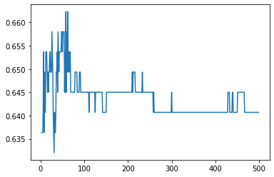

Stacking & Bagging#
import pandas as pd
import numpy as np
import sklearn as sk
import matplotlib.pyplot as plt
import time
from sklearn.neighbors import KNeighborsClassifier
import warnings
warnings.filterwarnings("ignore")
from google.colab import drive
drive.mount('/content/drive')
KeyboardInterruptTraceback (most recent call last)
<ipython-input-2-d5df0069828e> in <cell line: 2>()
1 from google.colab import drive
----> 2 drive.mount('/content/drive')
/usr/local/lib/python3.9/dist-packages/google/colab/drive.py in mount(mountpoint, force_remount, timeout_ms, readonly)
101 def mount(mountpoint, force_remount=False, timeout_ms=120000, readonly=False):
102 """Mount your Google Drive at the specified mountpoint path."""
--> 103 return _mount(
104 mountpoint,
105 force_remount=force_remount,
/usr/local/lib/python3.9/dist-packages/google/colab/drive.py in _mount(mountpoint, force_remount, timeout_ms, ephemeral, readonly)
130 )
131 if ephemeral:
--> 132 _message.blocking_request(
133 'request_auth', request={'authType': 'dfs_ephemeral'}, timeout_sec=None
134 )
/usr/local/lib/python3.9/dist-packages/google/colab/_message.py in blocking_request(request_type, request, timeout_sec, parent)
175 request_type, request, parent=parent, expect_reply=True
176 )
--> 177 return read_reply_from_input(request_id, timeout_sec)
/usr/local/lib/python3.9/dist-packages/google/colab/_message.py in read_reply_from_input(message_id, timeout_sec)
95 reply = _read_next_input_message()
96 if reply == _NOT_READY or not isinstance(reply, dict):
---> 97 time.sleep(0.025)
98 continue
99 if (
KeyboardInterrupt:
from scipy.io import arff
import pandas as pd
data =arff.loadarff('/content/drive/MyDrive/DATAMINING/tugas/messidor_features.arff')
df = pd.DataFrame(data[0])
df
| 0 | 1 | 2 | 3 | 4 | 5 | 6 | 7 | 8 | 9 | 10 | 11 | 12 | 13 | 14 | 15 | 16 | 17 | 18 | Class | |
|---|---|---|---|---|---|---|---|---|---|---|---|---|---|---|---|---|---|---|---|---|
| 0 | 1.0 | 1.0 | 22.0 | 22.0 | 22.0 | 19.0 | 18.0 | 14.0 | 49.895756 | 17.775994 | 5.270920 | 0.771761 | 0.018632 | 0.006864 | 0.003923 | 0.003923 | 0.486903 | 0.100025 | 1.0 | b'0' |
| 1 | 1.0 | 1.0 | 24.0 | 24.0 | 22.0 | 18.0 | 16.0 | 13.0 | 57.709936 | 23.799994 | 3.325423 | 0.234185 | 0.003903 | 0.003903 | 0.003903 | 0.003903 | 0.520908 | 0.144414 | 0.0 | b'0' |
| 2 | 1.0 | 1.0 | 62.0 | 60.0 | 59.0 | 54.0 | 47.0 | 33.0 | 55.831441 | 27.993933 | 12.687485 | 4.852282 | 1.393889 | 0.373252 | 0.041817 | 0.007744 | 0.530904 | 0.128548 | 0.0 | b'1' |
| 3 | 1.0 | 1.0 | 55.0 | 53.0 | 53.0 | 50.0 | 43.0 | 31.0 | 40.467228 | 18.445954 | 9.118901 | 3.079428 | 0.840261 | 0.272434 | 0.007653 | 0.001531 | 0.483284 | 0.114790 | 0.0 | b'0' |
| 4 | 1.0 | 1.0 | 44.0 | 44.0 | 44.0 | 41.0 | 39.0 | 27.0 | 18.026254 | 8.570709 | 0.410381 | 0.000000 | 0.000000 | 0.000000 | 0.000000 | 0.000000 | 0.475935 | 0.123572 | 0.0 | b'1' |
| ... | ... | ... | ... | ... | ... | ... | ... | ... | ... | ... | ... | ... | ... | ... | ... | ... | ... | ... | ... | ... |
| 1146 | 1.0 | 1.0 | 34.0 | 34.0 | 34.0 | 33.0 | 31.0 | 24.0 | 6.071765 | 0.937472 | 0.031145 | 0.003115 | 0.000000 | 0.000000 | 0.000000 | 0.000000 | 0.537470 | 0.116795 | 0.0 | b'0' |
| 1147 | 1.0 | 1.0 | 49.0 | 49.0 | 49.0 | 49.0 | 45.0 | 37.0 | 63.197145 | 27.377668 | 8.067688 | 0.979548 | 0.001552 | 0.000000 | 0.000000 | 0.000000 | 0.516733 | 0.124190 | 0.0 | b'0' |
| 1148 | 1.0 | 0.0 | 49.0 | 48.0 | 48.0 | 45.0 | 43.0 | 33.0 | 30.461898 | 13.966980 | 1.763305 | 0.137858 | 0.011221 | 0.000000 | 0.000000 | 0.000000 | 0.560632 | 0.129843 | 0.0 | b'0' |
| 1149 | 1.0 | 1.0 | 39.0 | 36.0 | 29.0 | 23.0 | 13.0 | 7.0 | 40.525739 | 12.604947 | 4.740919 | 1.077570 | 0.563518 | 0.326860 | 0.239568 | 0.174584 | 0.485972 | 0.106690 | 1.0 | b'1' |
| 1150 | 1.0 | 1.0 | 7.0 | 7.0 | 7.0 | 7.0 | 7.0 | 5.0 | 69.423565 | 7.031843 | 1.750548 | 0.046597 | 0.021180 | 0.008472 | 0.000000 | 0.000000 | 0.556192 | 0.088957 | 0.0 | b'0' |
1151 rows × 20 columns
col_names=[]
for i in range (20):
if i == 0:
col_names.append('quality')
if i == 1:
col_names.append('prescreen')
if i >= 2 and i <= 7:
col_names.append('ma' + str(i))
if i >= 8 and i <= 15:
col_names.append('exudate' + str(i))
if i == 16:
col_names.append('euDist')
if i == 17:
col_names.append('diameter')
if i == 18:
col_names.append('amfm_class')
if i == 19:
col_names.append('label')
df.columns = [col_names]
df
| quality | prescreen | ma2 | ma3 | ma4 | ma5 | ma6 | ma7 | exudate8 | exudate9 | exudate10 | exudate11 | exudate12 | exudate13 | exudate14 | exudate15 | euDist | diameter | amfm_class | label | |
|---|---|---|---|---|---|---|---|---|---|---|---|---|---|---|---|---|---|---|---|---|
| 0 | 1.0 | 1.0 | 22.0 | 22.0 | 22.0 | 19.0 | 18.0 | 14.0 | 49.895756 | 17.775994 | 5.270920 | 0.771761 | 0.018632 | 0.006864 | 0.003923 | 0.003923 | 0.486903 | 0.100025 | 1.0 | b'0' |
| 1 | 1.0 | 1.0 | 24.0 | 24.0 | 22.0 | 18.0 | 16.0 | 13.0 | 57.709936 | 23.799994 | 3.325423 | 0.234185 | 0.003903 | 0.003903 | 0.003903 | 0.003903 | 0.520908 | 0.144414 | 0.0 | b'0' |
| 2 | 1.0 | 1.0 | 62.0 | 60.0 | 59.0 | 54.0 | 47.0 | 33.0 | 55.831441 | 27.993933 | 12.687485 | 4.852282 | 1.393889 | 0.373252 | 0.041817 | 0.007744 | 0.530904 | 0.128548 | 0.0 | b'1' |
| 3 | 1.0 | 1.0 | 55.0 | 53.0 | 53.0 | 50.0 | 43.0 | 31.0 | 40.467228 | 18.445954 | 9.118901 | 3.079428 | 0.840261 | 0.272434 | 0.007653 | 0.001531 | 0.483284 | 0.114790 | 0.0 | b'0' |
| 4 | 1.0 | 1.0 | 44.0 | 44.0 | 44.0 | 41.0 | 39.0 | 27.0 | 18.026254 | 8.570709 | 0.410381 | 0.000000 | 0.000000 | 0.000000 | 0.000000 | 0.000000 | 0.475935 | 0.123572 | 0.0 | b'1' |
| ... | ... | ... | ... | ... | ... | ... | ... | ... | ... | ... | ... | ... | ... | ... | ... | ... | ... | ... | ... | ... |
| 1146 | 1.0 | 1.0 | 34.0 | 34.0 | 34.0 | 33.0 | 31.0 | 24.0 | 6.071765 | 0.937472 | 0.031145 | 0.003115 | 0.000000 | 0.000000 | 0.000000 | 0.000000 | 0.537470 | 0.116795 | 0.0 | b'0' |
| 1147 | 1.0 | 1.0 | 49.0 | 49.0 | 49.0 | 49.0 | 45.0 | 37.0 | 63.197145 | 27.377668 | 8.067688 | 0.979548 | 0.001552 | 0.000000 | 0.000000 | 0.000000 | 0.516733 | 0.124190 | 0.0 | b'0' |
| 1148 | 1.0 | 0.0 | 49.0 | 48.0 | 48.0 | 45.0 | 43.0 | 33.0 | 30.461898 | 13.966980 | 1.763305 | 0.137858 | 0.011221 | 0.000000 | 0.000000 | 0.000000 | 0.560632 | 0.129843 | 0.0 | b'0' |
| 1149 | 1.0 | 1.0 | 39.0 | 36.0 | 29.0 | 23.0 | 13.0 | 7.0 | 40.525739 | 12.604947 | 4.740919 | 1.077570 | 0.563518 | 0.326860 | 0.239568 | 0.174584 | 0.485972 | 0.106690 | 1.0 | b'1' |
| 1150 | 1.0 | 1.0 | 7.0 | 7.0 | 7.0 | 7.0 | 7.0 | 5.0 | 69.423565 | 7.031843 | 1.750548 | 0.046597 | 0.021180 | 0.008472 | 0.000000 | 0.000000 | 0.556192 | 0.088957 | 0.0 | b'0' |
1151 rows × 20 columns
X = df.drop(columns=['label'])
X
| quality | prescreen | ma2 | ma3 | ma4 | ma5 | ma6 | ma7 | exudate8 | exudate9 | exudate10 | exudate11 | exudate12 | exudate13 | exudate14 | exudate15 | euDist | diameter | amfm_class | |
|---|---|---|---|---|---|---|---|---|---|---|---|---|---|---|---|---|---|---|---|
| 0 | 1.0 | 1.0 | 22.0 | 22.0 | 22.0 | 19.0 | 18.0 | 14.0 | 49.895756 | 17.775994 | 5.270920 | 0.771761 | 0.018632 | 0.006864 | 0.003923 | 0.003923 | 0.486903 | 0.100025 | 1.0 |
| 1 | 1.0 | 1.0 | 24.0 | 24.0 | 22.0 | 18.0 | 16.0 | 13.0 | 57.709936 | 23.799994 | 3.325423 | 0.234185 | 0.003903 | 0.003903 | 0.003903 | 0.003903 | 0.520908 | 0.144414 | 0.0 |
| 2 | 1.0 | 1.0 | 62.0 | 60.0 | 59.0 | 54.0 | 47.0 | 33.0 | 55.831441 | 27.993933 | 12.687485 | 4.852282 | 1.393889 | 0.373252 | 0.041817 | 0.007744 | 0.530904 | 0.128548 | 0.0 |
| 3 | 1.0 | 1.0 | 55.0 | 53.0 | 53.0 | 50.0 | 43.0 | 31.0 | 40.467228 | 18.445954 | 9.118901 | 3.079428 | 0.840261 | 0.272434 | 0.007653 | 0.001531 | 0.483284 | 0.114790 | 0.0 |
| 4 | 1.0 | 1.0 | 44.0 | 44.0 | 44.0 | 41.0 | 39.0 | 27.0 | 18.026254 | 8.570709 | 0.410381 | 0.000000 | 0.000000 | 0.000000 | 0.000000 | 0.000000 | 0.475935 | 0.123572 | 0.0 |
| ... | ... | ... | ... | ... | ... | ... | ... | ... | ... | ... | ... | ... | ... | ... | ... | ... | ... | ... | ... |
| 1146 | 1.0 | 1.0 | 34.0 | 34.0 | 34.0 | 33.0 | 31.0 | 24.0 | 6.071765 | 0.937472 | 0.031145 | 0.003115 | 0.000000 | 0.000000 | 0.000000 | 0.000000 | 0.537470 | 0.116795 | 0.0 |
| 1147 | 1.0 | 1.0 | 49.0 | 49.0 | 49.0 | 49.0 | 45.0 | 37.0 | 63.197145 | 27.377668 | 8.067688 | 0.979548 | 0.001552 | 0.000000 | 0.000000 | 0.000000 | 0.516733 | 0.124190 | 0.0 |
| 1148 | 1.0 | 0.0 | 49.0 | 48.0 | 48.0 | 45.0 | 43.0 | 33.0 | 30.461898 | 13.966980 | 1.763305 | 0.137858 | 0.011221 | 0.000000 | 0.000000 | 0.000000 | 0.560632 | 0.129843 | 0.0 |
| 1149 | 1.0 | 1.0 | 39.0 | 36.0 | 29.0 | 23.0 | 13.0 | 7.0 | 40.525739 | 12.604947 | 4.740919 | 1.077570 | 0.563518 | 0.326860 | 0.239568 | 0.174584 | 0.485972 | 0.106690 | 1.0 |
| 1150 | 1.0 | 1.0 | 7.0 | 7.0 | 7.0 | 7.0 | 7.0 | 5.0 | 69.423565 | 7.031843 | 1.750548 | 0.046597 | 0.021180 | 0.008472 | 0.000000 | 0.000000 | 0.556192 | 0.088957 | 0.0 |
1151 rows × 19 columns
Rumus prepocessing data Min Max#
\[
\displaystyle x = \frac{x_{i} - x_{min}}{x_{max} - x_{min}}
\]
from sklearn.preprocessing import MinMaxScaler
scaler = MinMaxScaler()
#scaler.fit(features)
#scaler.transform(features)
scaled = scaler.fit_transform(X)
features_names = X.columns.copy()
#features_names.remove('label')
scaled_features = pd.DataFrame(scaled, columns=features_names)
scaled_features.head(10)
| quality | prescreen | ma2 | ma3 | ma4 | ma5 | ma6 | ma7 | exudate8 | exudate9 | exudate10 | exudate11 | exudate12 | exudate13 | exudate14 | exudate15 | euDist | diameter | amfm_class | |
|---|---|---|---|---|---|---|---|---|---|---|---|---|---|---|---|---|---|---|---|
| 0 | 1.0 | 1.0 | 0.140000 | 0.160305 | 0.176471 | 0.173077 | 0.177083 | 0.147727 | 0.122764 | 0.106359 | 0.049693 | 0.012913 | 0.000362 | 0.000342 | 0.000661 | 0.001271 | 0.530801 | 0.261133 | 1.0 |
| 1 | 1.0 | 1.0 | 0.153333 | 0.175573 | 0.176471 | 0.163462 | 0.156250 | 0.136364 | 0.142126 | 0.142403 | 0.031351 | 0.003918 | 0.000076 | 0.000194 | 0.000657 | 0.001264 | 0.682302 | 0.536341 | 0.0 |
| 2 | 1.0 | 1.0 | 0.406667 | 0.450382 | 0.487395 | 0.509615 | 0.479167 | 0.363636 | 0.137472 | 0.167497 | 0.119614 | 0.081188 | 0.027106 | 0.018571 | 0.007043 | 0.002509 | 0.726836 | 0.437973 | 0.0 |
| 3 | 1.0 | 1.0 | 0.360000 | 0.396947 | 0.436975 | 0.471154 | 0.437500 | 0.340909 | 0.099403 | 0.110368 | 0.085971 | 0.051525 | 0.016340 | 0.013555 | 0.001289 | 0.000496 | 0.514678 | 0.352675 | 0.0 |
| 4 | 1.0 | 1.0 | 0.286667 | 0.328244 | 0.361345 | 0.384615 | 0.395833 | 0.295455 | 0.043799 | 0.051281 | 0.003869 | 0.000000 | 0.000000 | 0.000000 | 0.000000 | 0.000000 | 0.481936 | 0.407122 | 0.0 |
| 5 | 1.0 | 1.0 | 0.286667 | 0.320611 | 0.336134 | 0.384615 | 0.375000 | 0.318182 | 0.069395 | 0.041498 | 0.021738 | 0.005417 | 0.000000 | 0.000000 | 0.000000 | 0.000000 | 0.601764 | 0.426770 | 0.0 |
| 6 | 1.0 | 0.0 | 0.186667 | 0.213740 | 0.235294 | 0.250000 | 0.250000 | 0.170455 | 0.037412 | 0.054531 | 0.015400 | 0.000000 | 0.000000 | 0.000000 | 0.000000 | 0.000000 | 0.775126 | 0.506339 | 0.0 |
| 7 | 1.0 | 1.0 | 0.033333 | 0.038168 | 0.042017 | 0.048077 | 0.010417 | 0.000000 | 0.050374 | 0.056828 | 0.011536 | 0.002516 | 0.000000 | 0.000000 | 0.000000 | 0.000000 | 0.929166 | 0.081622 | 1.0 |
| 8 | 1.0 | 1.0 | 0.140000 | 0.152672 | 0.142857 | 0.134615 | 0.125000 | 0.102273 | 0.164381 | 0.140880 | 0.057991 | 0.008305 | 0.000000 | 0.000000 | 0.000000 | 0.000000 | 0.589477 | 0.365093 | 0.0 |
| 9 | 1.0 | 1.0 | 0.520000 | 0.564885 | 0.605042 | 0.673077 | 0.656250 | 0.522727 | 0.053997 | 0.060159 | 0.008246 | 0.001670 | 0.000455 | 0.000000 | 0.000000 | 0.000000 | 0.860738 | 0.317608 | 0.0 |
Save model prepocessing#
import joblib
filename = "norm.sav"
joblib.dump(scaler, filename)
['norm.sav']
y = df['label'].values
Encoder Label#
from sklearn import preprocessing
le = preprocessing.LabelEncoder()
y_baru = le.fit_transform(y)
y_baru
array([0, 0, 1, ..., 0, 1, 0])
from sklearn.model_selection import train_test_split
X_train, X_test, y_train, y_test=train_test_split(scaled_features, y_baru, test_size=0.2, random_state=1)
from sklearn.naive_bayes import GaussianNB
from sklearn.ensemble import BaggingClassifier
# from sklearn.datasets import make_classification
gnb = GaussianNB()
gnb = gnb.fit(X_train, y_train)
# Predicting the training set
y_train_pred = gnb.predict(X_train)
# Predicting the test set
y_test_pred = gnb.predict(X_test)
from sklearn.metrics import accuracy_score
gnb_train = accuracy_score(y_train, y_train_pred)
gnb_test = accuracy_score(y_test, y_test_pred)
# print(f’Gausin train/test accuracies: {gnb_train:.3f}/{gnb_test:.3f}’)
print(f'Gausin train/test accuracies: {gnb_train:.3f}/{gnb_test:.3f}')
Gausin train/test accuracies: 0.640/0.632
from sklearn.ensemble import RandomForestClassifier
clf = RandomForestClassifier(n_estimators=14, max_depth=2, random_state=0)
# bag = bag.fit(X_train, y_train)
clf = clf.fit(X_train, y_train)
Stacking - Random Forest#
Stacking melibatkan pemasangan banyak jenis model yang berbeda pada data yang sama dan menggunakan model lain untuk mempelajari cara terbaik menggabungkan prediksi.
n = list(range(2,500))
acuracy = []
for i in n:
clf = RandomForestClassifier(n_estimators=i, max_depth=2, random_state=0)
clf = clf.fit(X_train, y_train)
y_test_pred = clf.predict(X_test)
bag_test = accuracy_score(y_test, y_test_pred)
print(f'acuracy n = {i} = {bag_test}')
acuracy.append(bag_test)
acuracy n = 2 = 0.6406926406926406
acuracy n = 3 = 0.645021645021645
acuracy n = 4 = 0.6493506493506493
acuracy n = 5 = 0.6406926406926406
acuracy n = 6 = 0.6493506493506493
acuracy n = 7 = 0.6493506493506493
acuracy n = 8 = 0.645021645021645
acuracy n = 9 = 0.6363636363636364
acuracy n = 10 = 0.645021645021645
acuracy n = 11 = 0.6406926406926406
acuracy n = 12 = 0.658008658008658
acuracy n = 13 = 0.6536796536796536
acuracy n = 14 = 0.6666666666666666
acuracy n = 15 = 0.6666666666666666
acuracy n = 16 = 0.658008658008658
acuracy n = 17 = 0.658008658008658
acuracy n = 18 = 0.658008658008658
acuracy n = 19 = 0.658008658008658
acuracy n = 20 = 0.658008658008658
acuracy n = 21 = 0.658008658008658
acuracy n = 22 = 0.6666666666666666
acuracy n = 23 = 0.6666666666666666
acuracy n = 24 = 0.6666666666666666
acuracy n = 25 = 0.6666666666666666
acuracy n = 26 = 0.6666666666666666
acuracy n = 27 = 0.6536796536796536
acuracy n = 28 = 0.6623376623376623
acuracy n = 29 = 0.6536796536796536
acuracy n = 30 = 0.658008658008658
acuracy n = 31 = 0.658008658008658
acuracy n = 32 = 0.658008658008658
acuracy n = 33 = 0.6536796536796536
acuracy n = 34 = 0.6493506493506493
acuracy n = 35 = 0.6536796536796536
acuracy n = 36 = 0.6493506493506493
acuracy n = 37 = 0.645021645021645
acuracy n = 38 = 0.645021645021645
acuracy n = 39 = 0.6406926406926406
acuracy n = 40 = 0.6406926406926406
acuracy n = 41 = 0.645021645021645
acuracy n = 42 = 0.6406926406926406
acuracy n = 43 = 0.6406926406926406
acuracy n = 44 = 0.6406926406926406
acuracy n = 45 = 0.6493506493506493
acuracy n = 46 = 0.6406926406926406
acuracy n = 47 = 0.645021645021645
acuracy n = 48 = 0.6536796536796536
acuracy n = 49 = 0.658008658008658
acuracy n = 50 = 0.645021645021645
acuracy n = 51 = 0.6363636363636364
acuracy n = 52 = 0.6363636363636364
acuracy n = 53 = 0.6320346320346321
acuracy n = 54 = 0.6320346320346321
acuracy n = 55 = 0.6320346320346321
acuracy n = 56 = 0.6363636363636364
acuracy n = 57 = 0.6320346320346321
acuracy n = 58 = 0.6320346320346321
acuracy n = 59 = 0.6320346320346321
acuracy n = 60 = 0.6320346320346321
acuracy n = 61 = 0.6320346320346321
acuracy n = 62 = 0.6320346320346321
acuracy n = 63 = 0.6363636363636364
acuracy n = 64 = 0.6320346320346321
acuracy n = 65 = 0.6320346320346321
acuracy n = 66 = 0.6363636363636364
acuracy n = 67 = 0.6320346320346321
acuracy n = 68 = 0.6320346320346321
acuracy n = 69 = 0.6320346320346321
acuracy n = 70 = 0.6320346320346321
acuracy n = 71 = 0.6363636363636364
acuracy n = 72 = 0.6363636363636364
acuracy n = 73 = 0.6363636363636364
acuracy n = 74 = 0.6363636363636364
acuracy n = 75 = 0.6363636363636364
acuracy n = 76 = 0.6363636363636364
acuracy n = 77 = 0.6363636363636364
acuracy n = 78 = 0.6363636363636364
acuracy n = 79 = 0.6363636363636364
acuracy n = 80 = 0.6363636363636364
acuracy n = 81 = 0.6363636363636364
acuracy n = 82 = 0.6363636363636364
acuracy n = 83 = 0.6363636363636364
acuracy n = 84 = 0.6363636363636364
acuracy n = 85 = 0.6363636363636364
acuracy n = 86 = 0.6363636363636364
acuracy n = 87 = 0.6363636363636364
acuracy n = 88 = 0.6363636363636364
acuracy n = 89 = 0.6363636363636364
acuracy n = 90 = 0.6363636363636364
acuracy n = 91 = 0.6363636363636364
acuracy n = 92 = 0.6363636363636364
acuracy n = 93 = 0.6406926406926406
acuracy n = 94 = 0.6363636363636364
acuracy n = 95 = 0.6363636363636364
acuracy n = 96 = 0.6363636363636364
acuracy n = 97 = 0.6363636363636364
acuracy n = 98 = 0.6406926406926406
acuracy n = 99 = 0.6406926406926406
acuracy n = 100 = 0.6406926406926406
acuracy n = 101 = 0.6406926406926406
acuracy n = 102 = 0.6406926406926406
acuracy n = 103 = 0.6406926406926406
acuracy n = 104 = 0.645021645021645
acuracy n = 105 = 0.645021645021645
acuracy n = 106 = 0.645021645021645
acuracy n = 107 = 0.645021645021645
acuracy n = 108 = 0.645021645021645
acuracy n = 109 = 0.645021645021645
acuracy n = 110 = 0.645021645021645
acuracy n = 111 = 0.645021645021645
acuracy n = 112 = 0.6363636363636364
acuracy n = 113 = 0.6363636363636364
acuracy n = 114 = 0.6363636363636364
acuracy n = 115 = 0.6363636363636364
acuracy n = 116 = 0.6363636363636364
acuracy n = 117 = 0.6406926406926406
acuracy n = 118 = 0.6363636363636364
acuracy n = 119 = 0.6363636363636364
acuracy n = 120 = 0.6363636363636364
acuracy n = 121 = 0.6363636363636364
acuracy n = 122 = 0.6406926406926406
acuracy n = 123 = 0.6406926406926406
acuracy n = 124 = 0.645021645021645
acuracy n = 125 = 0.6493506493506493
acuracy n = 126 = 0.645021645021645
acuracy n = 127 = 0.645021645021645
acuracy n = 128 = 0.645021645021645
acuracy n = 129 = 0.6493506493506493
acuracy n = 130 = 0.6493506493506493
acuracy n = 131 = 0.6493506493506493
acuracy n = 132 = 0.6493506493506493
acuracy n = 133 = 0.645021645021645
acuracy n = 134 = 0.645021645021645
acuracy n = 135 = 0.645021645021645
acuracy n = 136 = 0.645021645021645
acuracy n = 137 = 0.645021645021645
acuracy n = 138 = 0.645021645021645
acuracy n = 139 = 0.645021645021645
acuracy n = 140 = 0.6363636363636364
acuracy n = 141 = 0.6406926406926406
acuracy n = 142 = 0.6406926406926406
acuracy n = 143 = 0.6406926406926406
acuracy n = 144 = 0.6406926406926406
acuracy n = 145 = 0.6406926406926406
acuracy n = 146 = 0.6406926406926406
acuracy n = 147 = 0.6363636363636364
acuracy n = 148 = 0.6363636363636364
acuracy n = 149 = 0.6363636363636364
acuracy n = 150 = 0.6363636363636364
acuracy n = 151 = 0.6363636363636364
acuracy n = 152 = 0.6363636363636364
acuracy n = 153 = 0.6363636363636364
acuracy n = 154 = 0.6363636363636364
acuracy n = 155 = 0.6363636363636364
acuracy n = 156 = 0.6363636363636364
acuracy n = 157 = 0.6363636363636364
acuracy n = 158 = 0.6363636363636364
acuracy n = 159 = 0.6363636363636364
acuracy n = 160 = 0.6363636363636364
acuracy n = 161 = 0.6363636363636364
acuracy n = 162 = 0.6363636363636364
acuracy n = 163 = 0.6406926406926406
acuracy n = 164 = 0.6406926406926406
acuracy n = 165 = 0.6406926406926406
acuracy n = 166 = 0.6406926406926406
acuracy n = 167 = 0.6406926406926406
acuracy n = 168 = 0.6406926406926406
acuracy n = 169 = 0.6406926406926406
acuracy n = 170 = 0.6363636363636364
acuracy n = 171 = 0.6363636363636364
acuracy n = 172 = 0.6363636363636364
acuracy n = 173 = 0.645021645021645
acuracy n = 174 = 0.645021645021645
acuracy n = 175 = 0.645021645021645
acuracy n = 176 = 0.6493506493506493
acuracy n = 177 = 0.6493506493506493
acuracy n = 178 = 0.6493506493506493
acuracy n = 179 = 0.645021645021645
acuracy n = 180 = 0.645021645021645
acuracy n = 181 = 0.6493506493506493
acuracy n = 182 = 0.645021645021645
acuracy n = 183 = 0.645021645021645
acuracy n = 184 = 0.645021645021645
acuracy n = 185 = 0.645021645021645
acuracy n = 186 = 0.645021645021645
acuracy n = 187 = 0.645021645021645
acuracy n = 188 = 0.6406926406926406
acuracy n = 189 = 0.6406926406926406
acuracy n = 190 = 0.6406926406926406
acuracy n = 191 = 0.6406926406926406
acuracy n = 192 = 0.6406926406926406
acuracy n = 193 = 0.6406926406926406
acuracy n = 194 = 0.6406926406926406
acuracy n = 195 = 0.6406926406926406
acuracy n = 196 = 0.6406926406926406
acuracy n = 197 = 0.6406926406926406
acuracy n = 198 = 0.6406926406926406
acuracy n = 199 = 0.6363636363636364
acuracy n = 200 = 0.6363636363636364
acuracy n = 201 = 0.6363636363636364
acuracy n = 202 = 0.6363636363636364
acuracy n = 203 = 0.6363636363636364
acuracy n = 204 = 0.6363636363636364
acuracy n = 205 = 0.6363636363636364
acuracy n = 206 = 0.6363636363636364
acuracy n = 207 = 0.6363636363636364
acuracy n = 208 = 0.6363636363636364
acuracy n = 209 = 0.6363636363636364
acuracy n = 210 = 0.6363636363636364
acuracy n = 211 = 0.6363636363636364
acuracy n = 212 = 0.6363636363636364
acuracy n = 213 = 0.6363636363636364
acuracy n = 214 = 0.6363636363636364
acuracy n = 215 = 0.6363636363636364
acuracy n = 216 = 0.6406926406926406
acuracy n = 217 = 0.6363636363636364
acuracy n = 218 = 0.6363636363636364
acuracy n = 219 = 0.6363636363636364
acuracy n = 220 = 0.6363636363636364
acuracy n = 221 = 0.6363636363636364
acuracy n = 222 = 0.6363636363636364
acuracy n = 223 = 0.6363636363636364
acuracy n = 224 = 0.6363636363636364
acuracy n = 225 = 0.6363636363636364
acuracy n = 226 = 0.6406926406926406
acuracy n = 227 = 0.6363636363636364
acuracy n = 228 = 0.6363636363636364
acuracy n = 229 = 0.6363636363636364
acuracy n = 230 = 0.6363636363636364
acuracy n = 231 = 0.6363636363636364
acuracy n = 232 = 0.6363636363636364
acuracy n = 233 = 0.6363636363636364
acuracy n = 234 = 0.6363636363636364
acuracy n = 235 = 0.6363636363636364
acuracy n = 236 = 0.6363636363636364
acuracy n = 237 = 0.6363636363636364
acuracy n = 238 = 0.6363636363636364
acuracy n = 239 = 0.6363636363636364
acuracy n = 240 = 0.6363636363636364
acuracy n = 241 = 0.6363636363636364
acuracy n = 242 = 0.6363636363636364
acuracy n = 243 = 0.6363636363636364
acuracy n = 244 = 0.6363636363636364
acuracy n = 245 = 0.6406926406926406
acuracy n = 246 = 0.6363636363636364
acuracy n = 247 = 0.6363636363636364
acuracy n = 248 = 0.6363636363636364
acuracy n = 249 = 0.6363636363636364
acuracy n = 250 = 0.6363636363636364
acuracy n = 251 = 0.6363636363636364
acuracy n = 252 = 0.6363636363636364
acuracy n = 253 = 0.6406926406926406
acuracy n = 254 = 0.6363636363636364
acuracy n = 255 = 0.6363636363636364
acuracy n = 256 = 0.6363636363636364
acuracy n = 257 = 0.6406926406926406
acuracy n = 258 = 0.6363636363636364
acuracy n = 259 = 0.6363636363636364
acuracy n = 260 = 0.6363636363636364
acuracy n = 261 = 0.6363636363636364
acuracy n = 262 = 0.6363636363636364
acuracy n = 263 = 0.6363636363636364
acuracy n = 264 = 0.6363636363636364
acuracy n = 265 = 0.6363636363636364
acuracy n = 266 = 0.6363636363636364
acuracy n = 267 = 0.6363636363636364
acuracy n = 268 = 0.6363636363636364
acuracy n = 269 = 0.6363636363636364
acuracy n = 270 = 0.6363636363636364
acuracy n = 271 = 0.6363636363636364
acuracy n = 272 = 0.6363636363636364
acuracy n = 273 = 0.6363636363636364
acuracy n = 274 = 0.6363636363636364
acuracy n = 275 = 0.6363636363636364
acuracy n = 276 = 0.6363636363636364
acuracy n = 277 = 0.6363636363636364
acuracy n = 278 = 0.6363636363636364
acuracy n = 279 = 0.6363636363636364
acuracy n = 280 = 0.6363636363636364
acuracy n = 281 = 0.6363636363636364
acuracy n = 282 = 0.6363636363636364
acuracy n = 283 = 0.6363636363636364
acuracy n = 284 = 0.6363636363636364
acuracy n = 285 = 0.6363636363636364
acuracy n = 286 = 0.6406926406926406
acuracy n = 287 = 0.6363636363636364
acuracy n = 288 = 0.6363636363636364
acuracy n = 289 = 0.6406926406926406
acuracy n = 290 = 0.645021645021645
acuracy n = 291 = 0.645021645021645
acuracy n = 292 = 0.645021645021645
acuracy n = 293 = 0.645021645021645
acuracy n = 294 = 0.645021645021645
acuracy n = 295 = 0.645021645021645
acuracy n = 296 = 0.6406926406926406
acuracy n = 297 = 0.6406926406926406
acuracy n = 298 = 0.645021645021645
acuracy n = 299 = 0.6406926406926406
acuracy n = 300 = 0.645021645021645
acuracy n = 301 = 0.645021645021645
acuracy n = 302 = 0.645021645021645
acuracy n = 303 = 0.645021645021645
acuracy n = 304 = 0.6406926406926406
acuracy n = 305 = 0.6406926406926406
acuracy n = 306 = 0.6406926406926406
acuracy n = 307 = 0.6406926406926406
acuracy n = 308 = 0.6406926406926406
acuracy n = 309 = 0.6406926406926406
acuracy n = 310 = 0.645021645021645
acuracy n = 311 = 0.645021645021645
acuracy n = 312 = 0.645021645021645
acuracy n = 313 = 0.645021645021645
acuracy n = 314 = 0.645021645021645
acuracy n = 315 = 0.6406926406926406
acuracy n = 316 = 0.6406926406926406
acuracy n = 317 = 0.6406926406926406
acuracy n = 318 = 0.6406926406926406
acuracy n = 319 = 0.6406926406926406
acuracy n = 320 = 0.6406926406926406
acuracy n = 321 = 0.6406926406926406
acuracy n = 322 = 0.6406926406926406
acuracy n = 323 = 0.6406926406926406
acuracy n = 324 = 0.6406926406926406
acuracy n = 325 = 0.6406926406926406
acuracy n = 326 = 0.6406926406926406
acuracy n = 327 = 0.6406926406926406
acuracy n = 328 = 0.6406926406926406
acuracy n = 329 = 0.6406926406926406
acuracy n = 330 = 0.6406926406926406
acuracy n = 331 = 0.6406926406926406
acuracy n = 332 = 0.6406926406926406
acuracy n = 333 = 0.6406926406926406
acuracy n = 334 = 0.6406926406926406
acuracy n = 335 = 0.6406926406926406
acuracy n = 336 = 0.6406926406926406
acuracy n = 337 = 0.6406926406926406
acuracy n = 338 = 0.6406926406926406
acuracy n = 339 = 0.6406926406926406
acuracy n = 340 = 0.6406926406926406
acuracy n = 341 = 0.6406926406926406
acuracy n = 342 = 0.6406926406926406
acuracy n = 343 = 0.645021645021645
acuracy n = 344 = 0.6406926406926406
acuracy n = 345 = 0.6406926406926406
acuracy n = 346 = 0.6406926406926406
acuracy n = 347 = 0.6406926406926406
acuracy n = 348 = 0.6406926406926406
acuracy n = 349 = 0.6406926406926406
acuracy n = 350 = 0.6406926406926406
acuracy n = 351 = 0.6406926406926406
acuracy n = 352 = 0.6406926406926406
acuracy n = 353 = 0.6406926406926406
acuracy n = 354 = 0.6406926406926406
acuracy n = 355 = 0.6406926406926406
acuracy n = 356 = 0.6406926406926406
acuracy n = 357 = 0.6406926406926406
acuracy n = 358 = 0.6406926406926406
acuracy n = 359 = 0.6406926406926406
acuracy n = 360 = 0.6406926406926406
acuracy n = 361 = 0.6406926406926406
acuracy n = 362 = 0.6406926406926406
acuracy n = 363 = 0.6406926406926406
acuracy n = 364 = 0.6406926406926406
acuracy n = 365 = 0.6406926406926406
acuracy n = 366 = 0.6406926406926406
acuracy n = 367 = 0.6406926406926406
acuracy n = 368 = 0.6406926406926406
acuracy n = 369 = 0.6406926406926406
acuracy n = 370 = 0.6406926406926406
acuracy n = 371 = 0.6406926406926406
acuracy n = 372 = 0.6406926406926406
acuracy n = 373 = 0.6406926406926406
acuracy n = 374 = 0.6406926406926406
acuracy n = 375 = 0.6406926406926406
acuracy n = 376 = 0.645021645021645
acuracy n = 377 = 0.645021645021645
acuracy n = 378 = 0.645021645021645
acuracy n = 379 = 0.645021645021645
acuracy n = 380 = 0.645021645021645
acuracy n = 381 = 0.645021645021645
acuracy n = 382 = 0.645021645021645
acuracy n = 383 = 0.645021645021645
acuracy n = 384 = 0.645021645021645
acuracy n = 385 = 0.645021645021645
acuracy n = 386 = 0.645021645021645
acuracy n = 387 = 0.645021645021645
acuracy n = 388 = 0.6406926406926406
acuracy n = 389 = 0.6406926406926406
acuracy n = 390 = 0.6406926406926406
acuracy n = 391 = 0.6406926406926406
acuracy n = 392 = 0.6406926406926406
acuracy n = 393 = 0.6406926406926406
acuracy n = 394 = 0.6406926406926406
acuracy n = 395 = 0.6406926406926406
acuracy n = 396 = 0.6406926406926406
acuracy n = 397 = 0.6406926406926406
acuracy n = 398 = 0.6406926406926406
acuracy n = 399 = 0.6406926406926406
acuracy n = 400 = 0.6406926406926406
acuracy n = 401 = 0.6406926406926406
acuracy n = 402 = 0.6406926406926406
acuracy n = 403 = 0.6406926406926406
acuracy n = 404 = 0.645021645021645
acuracy n = 405 = 0.645021645021645
acuracy n = 406 = 0.645021645021645
acuracy n = 407 = 0.645021645021645
acuracy n = 408 = 0.645021645021645
acuracy n = 409 = 0.645021645021645
acuracy n = 410 = 0.645021645021645
acuracy n = 411 = 0.6493506493506493
acuracy n = 412 = 0.645021645021645
acuracy n = 413 = 0.645021645021645
acuracy n = 414 = 0.645021645021645
acuracy n = 415 = 0.645021645021645
acuracy n = 416 = 0.645021645021645
acuracy n = 417 = 0.645021645021645
acuracy n = 418 = 0.645021645021645
acuracy n = 419 = 0.645021645021645
acuracy n = 420 = 0.6493506493506493
acuracy n = 421 = 0.6493506493506493
acuracy n = 422 = 0.6493506493506493
acuracy n = 423 = 0.6493506493506493
acuracy n = 424 = 0.6493506493506493
acuracy n = 425 = 0.6493506493506493
acuracy n = 426 = 0.6493506493506493
acuracy n = 427 = 0.6493506493506493
acuracy n = 428 = 0.645021645021645
acuracy n = 429 = 0.645021645021645
acuracy n = 430 = 0.645021645021645
acuracy n = 431 = 0.645021645021645
acuracy n = 432 = 0.645021645021645
acuracy n = 433 = 0.645021645021645
acuracy n = 434 = 0.645021645021645
acuracy n = 435 = 0.645021645021645
acuracy n = 436 = 0.645021645021645
acuracy n = 437 = 0.645021645021645
acuracy n = 438 = 0.645021645021645
acuracy n = 439 = 0.645021645021645
acuracy n = 440 = 0.6493506493506493
acuracy n = 441 = 0.645021645021645
acuracy n = 442 = 0.645021645021645
acuracy n = 443 = 0.6493506493506493
acuracy n = 444 = 0.6493506493506493
acuracy n = 445 = 0.6493506493506493
acuracy n = 446 = 0.6493506493506493
acuracy n = 447 = 0.645021645021645
acuracy n = 448 = 0.645021645021645
acuracy n = 449 = 0.6493506493506493
acuracy n = 450 = 0.645021645021645
acuracy n = 451 = 0.6493506493506493
acuracy n = 452 = 0.6493506493506493
acuracy n = 453 = 0.6493506493506493
acuracy n = 454 = 0.645021645021645
acuracy n = 455 = 0.645021645021645
acuracy n = 456 = 0.645021645021645
acuracy n = 457 = 0.645021645021645
acuracy n = 458 = 0.645021645021645
acuracy n = 459 = 0.645021645021645
acuracy n = 460 = 0.645021645021645
acuracy n = 461 = 0.645021645021645
acuracy n = 462 = 0.645021645021645
acuracy n = 463 = 0.645021645021645
acuracy n = 464 = 0.645021645021645
acuracy n = 465 = 0.645021645021645
acuracy n = 466 = 0.645021645021645
acuracy n = 467 = 0.645021645021645
acuracy n = 468 = 0.645021645021645
acuracy n = 469 = 0.645021645021645
acuracy n = 470 = 0.645021645021645
acuracy n = 471 = 0.645021645021645
acuracy n = 472 = 0.645021645021645
acuracy n = 473 = 0.645021645021645
acuracy n = 474 = 0.645021645021645
acuracy n = 475 = 0.645021645021645
acuracy n = 476 = 0.645021645021645
acuracy n = 477 = 0.645021645021645
acuracy n = 478 = 0.645021645021645
acuracy n = 479 = 0.645021645021645
acuracy n = 480 = 0.645021645021645
acuracy n = 481 = 0.645021645021645
acuracy n = 482 = 0.645021645021645
acuracy n = 483 = 0.645021645021645
acuracy n = 484 = 0.645021645021645
acuracy n = 485 = 0.645021645021645
acuracy n = 486 = 0.645021645021645
acuracy n = 487 = 0.645021645021645
acuracy n = 488 = 0.645021645021645
acuracy n = 489 = 0.645021645021645
acuracy n = 490 = 0.645021645021645
acuracy n = 491 = 0.645021645021645
acuracy n = 492 = 0.645021645021645
acuracy n = 493 = 0.645021645021645
acuracy n = 494 = 0.645021645021645
acuracy n = 495 = 0.645021645021645
acuracy n = 496 = 0.645021645021645
acuracy n = 497 = 0.645021645021645
acuracy n = 498 = 0.645021645021645
acuracy n = 499 = 0.645021645021645
import matplotlib.pyplot as plt
# n = list(range(2,500))
plt.plot(n, acuracy)
plt.show()
# stacking
max(acuracy)
0.6666666666666666
Bagging - Bootstrap Aggregation#
Bagging melibatkan pemasangan banyak decision tree pada sampel yang berbeda dari dataset yang sama dan merata-ratakan atau voting hasil prediksi.
n = list(range(2,500))
acuracy = []
for i in n:
bag = BaggingClassifier(
base_estimator=gnb, # knn,gnb, jst
n_estimators=i,
random_state=0)
bag = bag.fit(X_train, y_train)
y_test_pred = bag.predict(X_test)
bag_test = accuracy_score(y_test, y_test_pred)
print(f'acuracy n = {i} = {bag_test}')
acuracy.append(bag_test)
max(acuracy)
acuracy n = 2 = 0.6363636363636364
acuracy n = 3 = 0.6363636363636364
acuracy n = 4 = 0.6363636363636364
acuracy n = 5 = 0.6363636363636364
acuracy n = 6 = 0.6406926406926406
acuracy n = 7 = 0.6536796536796536
acuracy n = 8 = 0.6363636363636364
acuracy n = 9 = 0.6493506493506493
acuracy n = 10 = 0.6406926406926406
acuracy n = 11 = 0.6406926406926406
acuracy n = 12 = 0.6536796536796536
acuracy n = 13 = 0.6536796536796536
acuracy n = 14 = 0.6536796536796536
acuracy n = 15 = 0.6493506493506493
acuracy n = 16 = 0.645021645021645
acuracy n = 17 = 0.6493506493506493
acuracy n = 18 = 0.645021645021645
acuracy n = 19 = 0.6493506493506493
acuracy n = 20 = 0.6493506493506493
acuracy n = 21 = 0.6536796536796536
acuracy n = 22 = 0.6536796536796536
acuracy n = 23 = 0.6493506493506493
acuracy n = 24 = 0.6493506493506493
acuracy n = 25 = 0.6493506493506493
acuracy n = 26 = 0.658008658008658
acuracy n = 27 = 0.6536796536796536
acuracy n = 28 = 0.6493506493506493
acuracy n = 29 = 0.6406926406926406
acuracy n = 30 = 0.6363636363636364
acuracy n = 31 = 0.6320346320346321
acuracy n = 32 = 0.6406926406926406
acuracy n = 33 = 0.6363636363636364
acuracy n = 34 = 0.6363636363636364
acuracy n = 35 = 0.6406926406926406
acuracy n = 36 = 0.6493506493506493
acuracy n = 37 = 0.6493506493506493
acuracy n = 38 = 0.6536796536796536
acuracy n = 39 = 0.645021645021645
acuracy n = 40 = 0.658008658008658
acuracy n = 41 = 0.6536796536796536
acuracy n = 42 = 0.6493506493506493
acuracy n = 43 = 0.6536796536796536
acuracy n = 44 = 0.6536796536796536
acuracy n = 45 = 0.6536796536796536
acuracy n = 46 = 0.6536796536796536
acuracy n = 47 = 0.6536796536796536
acuracy n = 48 = 0.658008658008658
acuracy n = 49 = 0.658008658008658
acuracy n = 50 = 0.6536796536796536
acuracy n = 51 = 0.658008658008658
acuracy n = 52 = 0.658008658008658
acuracy n = 53 = 0.658008658008658
acuracy n = 54 = 0.658008658008658
acuracy n = 55 = 0.645021645021645
acuracy n = 56 = 0.6536796536796536
acuracy n = 57 = 0.645021645021645
acuracy n = 58 = 0.6623376623376623
acuracy n = 59 = 0.645021645021645
acuracy n = 60 = 0.658008658008658
acuracy n = 61 = 0.6493506493506493
acuracy n = 62 = 0.6623376623376623
acuracy n = 63 = 0.6493506493506493
acuracy n = 64 = 0.6536796536796536
acuracy n = 65 = 0.6536796536796536
acuracy n = 66 = 0.6493506493506493
acuracy n = 67 = 0.6536796536796536
acuracy n = 68 = 0.6536796536796536
acuracy n = 69 = 0.645021645021645
acuracy n = 70 = 0.645021645021645
acuracy n = 71 = 0.645021645021645
acuracy n = 72 = 0.645021645021645
acuracy n = 73 = 0.645021645021645
acuracy n = 74 = 0.645021645021645
acuracy n = 75 = 0.645021645021645
acuracy n = 76 = 0.645021645021645
acuracy n = 77 = 0.645021645021645
acuracy n = 78 = 0.645021645021645
acuracy n = 79 = 0.6493506493506493
acuracy n = 80 = 0.6493506493506493
acuracy n = 81 = 0.6493506493506493
acuracy n = 82 = 0.6493506493506493
acuracy n = 83 = 0.6493506493506493
acuracy n = 84 = 0.645021645021645
acuracy n = 85 = 0.645021645021645
acuracy n = 86 = 0.645021645021645
acuracy n = 87 = 0.645021645021645
acuracy n = 88 = 0.645021645021645
acuracy n = 89 = 0.6493506493506493
acuracy n = 90 = 0.6493506493506493
acuracy n = 91 = 0.6493506493506493
acuracy n = 92 = 0.645021645021645
acuracy n = 93 = 0.645021645021645
acuracy n = 94 = 0.645021645021645
acuracy n = 95 = 0.645021645021645
acuracy n = 96 = 0.645021645021645
acuracy n = 97 = 0.645021645021645
acuracy n = 98 = 0.645021645021645
acuracy n = 99 = 0.645021645021645
acuracy n = 100 = 0.645021645021645
acuracy n = 101 = 0.645021645021645
acuracy n = 102 = 0.645021645021645
acuracy n = 103 = 0.645021645021645
acuracy n = 104 = 0.645021645021645
acuracy n = 105 = 0.645021645021645
acuracy n = 106 = 0.645021645021645
acuracy n = 107 = 0.645021645021645
acuracy n = 108 = 0.645021645021645
acuracy n = 109 = 0.645021645021645
acuracy n = 110 = 0.645021645021645
acuracy n = 111 = 0.6406926406926406
acuracy n = 112 = 0.645021645021645
acuracy n = 113 = 0.645021645021645
acuracy n = 114 = 0.645021645021645
acuracy n = 115 = 0.645021645021645
acuracy n = 116 = 0.645021645021645
acuracy n = 117 = 0.645021645021645
acuracy n = 118 = 0.645021645021645
acuracy n = 119 = 0.645021645021645
acuracy n = 120 = 0.645021645021645
acuracy n = 121 = 0.645021645021645
acuracy n = 122 = 0.645021645021645
acuracy n = 123 = 0.645021645021645
acuracy n = 124 = 0.645021645021645
acuracy n = 125 = 0.6406926406926406
acuracy n = 126 = 0.645021645021645
acuracy n = 127 = 0.645021645021645
acuracy n = 128 = 0.645021645021645
acuracy n = 129 = 0.645021645021645
acuracy n = 130 = 0.645021645021645
acuracy n = 131 = 0.645021645021645
acuracy n = 132 = 0.645021645021645
acuracy n = 133 = 0.645021645021645
acuracy n = 134 = 0.645021645021645
acuracy n = 135 = 0.645021645021645
acuracy n = 136 = 0.645021645021645
acuracy n = 137 = 0.645021645021645
acuracy n = 138 = 0.645021645021645
acuracy n = 139 = 0.645021645021645
acuracy n = 140 = 0.645021645021645
acuracy n = 141 = 0.645021645021645
acuracy n = 142 = 0.6406926406926406
acuracy n = 143 = 0.6406926406926406
acuracy n = 144 = 0.6406926406926406
acuracy n = 145 = 0.6406926406926406
acuracy n = 146 = 0.6406926406926406
acuracy n = 147 = 0.6406926406926406
acuracy n = 148 = 0.6406926406926406
acuracy n = 149 = 0.6406926406926406
acuracy n = 150 = 0.6406926406926406
acuracy n = 151 = 0.645021645021645
acuracy n = 152 = 0.645021645021645
acuracy n = 153 = 0.645021645021645
acuracy n = 154 = 0.645021645021645
acuracy n = 155 = 0.645021645021645
acuracy n = 156 = 0.645021645021645
acuracy n = 157 = 0.645021645021645
acuracy n = 158 = 0.645021645021645
acuracy n = 159 = 0.645021645021645
acuracy n = 160 = 0.645021645021645
acuracy n = 161 = 0.645021645021645
acuracy n = 162 = 0.645021645021645
acuracy n = 163 = 0.645021645021645
acuracy n = 164 = 0.645021645021645
acuracy n = 165 = 0.645021645021645
acuracy n = 166 = 0.645021645021645
acuracy n = 167 = 0.645021645021645
acuracy n = 168 = 0.645021645021645
acuracy n = 169 = 0.645021645021645
acuracy n = 170 = 0.645021645021645
acuracy n = 171 = 0.645021645021645
acuracy n = 172 = 0.645021645021645
acuracy n = 173 = 0.645021645021645
acuracy n = 174 = 0.645021645021645
acuracy n = 175 = 0.645021645021645
acuracy n = 176 = 0.645021645021645
acuracy n = 177 = 0.645021645021645
acuracy n = 178 = 0.645021645021645
acuracy n = 179 = 0.645021645021645
acuracy n = 180 = 0.645021645021645
acuracy n = 181 = 0.645021645021645
acuracy n = 182 = 0.645021645021645
acuracy n = 183 = 0.645021645021645
acuracy n = 184 = 0.645021645021645
acuracy n = 185 = 0.645021645021645
acuracy n = 186 = 0.645021645021645
acuracy n = 187 = 0.645021645021645
acuracy n = 188 = 0.645021645021645
acuracy n = 189 = 0.645021645021645
acuracy n = 190 = 0.645021645021645
acuracy n = 191 = 0.645021645021645
acuracy n = 192 = 0.645021645021645
acuracy n = 193 = 0.645021645021645
acuracy n = 194 = 0.645021645021645
acuracy n = 195 = 0.645021645021645
acuracy n = 196 = 0.645021645021645
acuracy n = 197 = 0.645021645021645
acuracy n = 198 = 0.645021645021645
acuracy n = 199 = 0.645021645021645
acuracy n = 200 = 0.645021645021645
acuracy n = 201 = 0.645021645021645
acuracy n = 202 = 0.645021645021645
acuracy n = 203 = 0.645021645021645
acuracy n = 204 = 0.645021645021645
acuracy n = 205 = 0.645021645021645
acuracy n = 206 = 0.645021645021645
acuracy n = 207 = 0.645021645021645
acuracy n = 208 = 0.645021645021645
acuracy n = 209 = 0.645021645021645
acuracy n = 210 = 0.6493506493506493
acuracy n = 211 = 0.645021645021645
acuracy n = 212 = 0.6493506493506493
acuracy n = 213 = 0.6493506493506493
acuracy n = 214 = 0.6493506493506493
acuracy n = 215 = 0.6493506493506493
acuracy n = 216 = 0.6493506493506493
acuracy n = 217 = 0.645021645021645
acuracy n = 218 = 0.645021645021645
acuracy n = 219 = 0.645021645021645
acuracy n = 220 = 0.645021645021645
acuracy n = 221 = 0.645021645021645
acuracy n = 222 = 0.645021645021645
acuracy n = 223 = 0.645021645021645
acuracy n = 224 = 0.645021645021645
acuracy n = 225 = 0.645021645021645
acuracy n = 226 = 0.645021645021645
acuracy n = 227 = 0.645021645021645
acuracy n = 228 = 0.645021645021645
acuracy n = 229 = 0.645021645021645
acuracy n = 230 = 0.645021645021645
acuracy n = 231 = 0.645021645021645
acuracy n = 232 = 0.645021645021645
acuracy n = 233 = 0.6493506493506493
acuracy n = 234 = 0.645021645021645
acuracy n = 235 = 0.645021645021645
acuracy n = 236 = 0.645021645021645
acuracy n = 237 = 0.645021645021645
acuracy n = 238 = 0.645021645021645
acuracy n = 239 = 0.645021645021645
acuracy n = 240 = 0.645021645021645
acuracy n = 241 = 0.645021645021645
acuracy n = 242 = 0.645021645021645
acuracy n = 243 = 0.645021645021645
acuracy n = 244 = 0.645021645021645
acuracy n = 245 = 0.645021645021645
acuracy n = 246 = 0.645021645021645
acuracy n = 247 = 0.645021645021645
acuracy n = 248 = 0.645021645021645
acuracy n = 249 = 0.645021645021645
acuracy n = 250 = 0.645021645021645
acuracy n = 251 = 0.645021645021645
acuracy n = 252 = 0.645021645021645
acuracy n = 253 = 0.645021645021645
acuracy n = 254 = 0.645021645021645
acuracy n = 255 = 0.645021645021645
acuracy n = 256 = 0.645021645021645
acuracy n = 257 = 0.645021645021645
acuracy n = 258 = 0.6406926406926406
acuracy n = 259 = 0.645021645021645
acuracy n = 260 = 0.6406926406926406
acuracy n = 261 = 0.6406926406926406
acuracy n = 262 = 0.6406926406926406
acuracy n = 263 = 0.6406926406926406
acuracy n = 264 = 0.6406926406926406
acuracy n = 265 = 0.6406926406926406
acuracy n = 266 = 0.6406926406926406
acuracy n = 267 = 0.6406926406926406
acuracy n = 268 = 0.6406926406926406
acuracy n = 269 = 0.6406926406926406
acuracy n = 270 = 0.6406926406926406
acuracy n = 271 = 0.6406926406926406
acuracy n = 272 = 0.6406926406926406
acuracy n = 273 = 0.6406926406926406
acuracy n = 274 = 0.6406926406926406
acuracy n = 275 = 0.6406926406926406
acuracy n = 276 = 0.6406926406926406
acuracy n = 277 = 0.6406926406926406
acuracy n = 278 = 0.6406926406926406
acuracy n = 279 = 0.6406926406926406
acuracy n = 280 = 0.6406926406926406
acuracy n = 281 = 0.6406926406926406
acuracy n = 282 = 0.6406926406926406
acuracy n = 283 = 0.6406926406926406
acuracy n = 284 = 0.6406926406926406
acuracy n = 285 = 0.6406926406926406
acuracy n = 286 = 0.6406926406926406
acuracy n = 287 = 0.6406926406926406
acuracy n = 288 = 0.6406926406926406
acuracy n = 289 = 0.6406926406926406
acuracy n = 290 = 0.6406926406926406
acuracy n = 291 = 0.6406926406926406
acuracy n = 292 = 0.6406926406926406
acuracy n = 293 = 0.6406926406926406
acuracy n = 294 = 0.6406926406926406
acuracy n = 295 = 0.6406926406926406
acuracy n = 296 = 0.6406926406926406
acuracy n = 297 = 0.6406926406926406
acuracy n = 298 = 0.6406926406926406
acuracy n = 299 = 0.6406926406926406
acuracy n = 300 = 0.645021645021645
acuracy n = 301 = 0.6406926406926406
acuracy n = 302 = 0.6406926406926406
acuracy n = 303 = 0.6406926406926406
acuracy n = 304 = 0.6406926406926406
acuracy n = 305 = 0.6406926406926406
acuracy n = 306 = 0.6406926406926406
acuracy n = 307 = 0.6406926406926406
acuracy n = 308 = 0.6406926406926406
acuracy n = 309 = 0.6406926406926406
acuracy n = 310 = 0.6406926406926406
acuracy n = 311 = 0.6406926406926406
acuracy n = 312 = 0.6406926406926406
acuracy n = 313 = 0.6406926406926406
acuracy n = 314 = 0.6406926406926406
acuracy n = 315 = 0.6406926406926406
acuracy n = 316 = 0.6406926406926406
acuracy n = 317 = 0.6406926406926406
acuracy n = 318 = 0.6406926406926406
acuracy n = 319 = 0.6406926406926406
acuracy n = 320 = 0.6406926406926406
acuracy n = 321 = 0.6406926406926406
acuracy n = 322 = 0.6406926406926406
acuracy n = 323 = 0.6406926406926406
acuracy n = 324 = 0.6406926406926406
acuracy n = 325 = 0.6406926406926406
acuracy n = 326 = 0.6406926406926406
acuracy n = 327 = 0.6406926406926406
acuracy n = 328 = 0.6406926406926406
acuracy n = 329 = 0.6406926406926406
acuracy n = 330 = 0.6406926406926406
acuracy n = 331 = 0.6406926406926406
acuracy n = 332 = 0.6406926406926406
acuracy n = 333 = 0.6406926406926406
acuracy n = 334 = 0.6406926406926406
acuracy n = 335 = 0.6406926406926406
acuracy n = 336 = 0.6406926406926406
acuracy n = 337 = 0.6406926406926406
acuracy n = 338 = 0.6406926406926406
acuracy n = 339 = 0.6406926406926406
acuracy n = 340 = 0.6406926406926406
acuracy n = 341 = 0.6406926406926406
acuracy n = 342 = 0.6406926406926406
acuracy n = 343 = 0.6406926406926406
acuracy n = 344 = 0.6406926406926406
acuracy n = 345 = 0.6406926406926406
acuracy n = 346 = 0.6406926406926406
acuracy n = 347 = 0.6406926406926406
acuracy n = 348 = 0.6406926406926406
acuracy n = 349 = 0.6406926406926406
acuracy n = 350 = 0.6406926406926406
acuracy n = 351 = 0.6406926406926406
acuracy n = 352 = 0.6406926406926406
acuracy n = 353 = 0.6406926406926406
acuracy n = 354 = 0.6406926406926406
acuracy n = 355 = 0.6406926406926406
acuracy n = 356 = 0.6406926406926406
acuracy n = 357 = 0.6406926406926406
acuracy n = 358 = 0.6406926406926406
acuracy n = 359 = 0.6406926406926406
acuracy n = 360 = 0.6406926406926406
acuracy n = 361 = 0.6406926406926406
acuracy n = 362 = 0.6406926406926406
acuracy n = 363 = 0.6406926406926406
acuracy n = 364 = 0.6406926406926406
acuracy n = 365 = 0.6406926406926406
acuracy n = 366 = 0.6406926406926406
acuracy n = 367 = 0.6406926406926406
acuracy n = 368 = 0.6406926406926406
acuracy n = 369 = 0.6406926406926406
acuracy n = 370 = 0.6406926406926406
acuracy n = 371 = 0.6406926406926406
acuracy n = 372 = 0.6406926406926406
acuracy n = 373 = 0.6406926406926406
acuracy n = 374 = 0.6406926406926406
acuracy n = 375 = 0.6406926406926406
acuracy n = 376 = 0.6406926406926406
acuracy n = 377 = 0.6406926406926406
acuracy n = 378 = 0.6406926406926406
acuracy n = 379 = 0.6406926406926406
acuracy n = 380 = 0.6406926406926406
acuracy n = 381 = 0.6406926406926406
acuracy n = 382 = 0.6406926406926406
acuracy n = 383 = 0.6406926406926406
acuracy n = 384 = 0.6406926406926406
acuracy n = 385 = 0.6406926406926406
acuracy n = 386 = 0.6406926406926406
acuracy n = 387 = 0.6406926406926406
acuracy n = 388 = 0.6406926406926406
acuracy n = 389 = 0.6406926406926406
acuracy n = 390 = 0.6406926406926406
acuracy n = 391 = 0.6406926406926406
acuracy n = 392 = 0.6406926406926406
acuracy n = 393 = 0.6406926406926406
acuracy n = 394 = 0.6406926406926406
acuracy n = 395 = 0.6406926406926406
acuracy n = 396 = 0.6406926406926406
acuracy n = 397 = 0.6406926406926406
acuracy n = 398 = 0.6406926406926406
acuracy n = 399 = 0.6406926406926406
acuracy n = 400 = 0.6406926406926406
acuracy n = 401 = 0.6406926406926406
acuracy n = 402 = 0.6406926406926406
acuracy n = 403 = 0.6406926406926406
acuracy n = 404 = 0.6406926406926406
acuracy n = 405 = 0.6406926406926406
acuracy n = 406 = 0.6406926406926406
acuracy n = 407 = 0.6406926406926406
acuracy n = 408 = 0.6406926406926406
acuracy n = 409 = 0.6406926406926406
acuracy n = 410 = 0.6406926406926406
acuracy n = 411 = 0.6406926406926406
acuracy n = 412 = 0.6406926406926406
acuracy n = 413 = 0.6406926406926406
acuracy n = 414 = 0.6406926406926406
acuracy n = 415 = 0.6406926406926406
acuracy n = 416 = 0.6406926406926406
acuracy n = 417 = 0.6406926406926406
acuracy n = 418 = 0.6406926406926406
acuracy n = 419 = 0.6406926406926406
acuracy n = 420 = 0.6406926406926406
acuracy n = 421 = 0.6406926406926406
acuracy n = 422 = 0.6406926406926406
acuracy n = 423 = 0.6406926406926406
acuracy n = 424 = 0.6406926406926406
acuracy n = 425 = 0.6406926406926406
acuracy n = 426 = 0.6406926406926406
acuracy n = 427 = 0.6406926406926406
acuracy n = 428 = 0.6406926406926406
acuracy n = 429 = 0.645021645021645
acuracy n = 430 = 0.645021645021645
acuracy n = 431 = 0.645021645021645
acuracy n = 432 = 0.645021645021645
acuracy n = 433 = 0.6406926406926406
acuracy n = 434 = 0.6406926406926406
acuracy n = 435 = 0.6406926406926406
acuracy n = 436 = 0.6406926406926406
acuracy n = 437 = 0.6406926406926406
acuracy n = 438 = 0.6406926406926406
acuracy n = 439 = 0.645021645021645
acuracy n = 440 = 0.645021645021645
acuracy n = 441 = 0.6406926406926406
acuracy n = 442 = 0.6406926406926406
acuracy n = 443 = 0.6406926406926406
acuracy n = 444 = 0.6406926406926406
acuracy n = 445 = 0.6406926406926406
acuracy n = 446 = 0.6406926406926406
acuracy n = 447 = 0.6406926406926406
acuracy n = 448 = 0.6406926406926406
acuracy n = 449 = 0.6406926406926406
acuracy n = 450 = 0.6406926406926406
acuracy n = 451 = 0.645021645021645
acuracy n = 452 = 0.645021645021645
acuracy n = 453 = 0.645021645021645
acuracy n = 454 = 0.645021645021645
acuracy n = 455 = 0.645021645021645
acuracy n = 456 = 0.645021645021645
acuracy n = 457 = 0.645021645021645
acuracy n = 458 = 0.645021645021645
acuracy n = 459 = 0.645021645021645
acuracy n = 460 = 0.645021645021645
acuracy n = 461 = 0.645021645021645
acuracy n = 462 = 0.645021645021645
acuracy n = 463 = 0.645021645021645
acuracy n = 464 = 0.645021645021645
acuracy n = 465 = 0.645021645021645
acuracy n = 466 = 0.645021645021645
acuracy n = 467 = 0.6406926406926406
acuracy n = 468 = 0.6406926406926406
acuracy n = 469 = 0.6406926406926406
acuracy n = 470 = 0.6406926406926406
acuracy n = 471 = 0.6406926406926406
acuracy n = 472 = 0.6406926406926406
acuracy n = 473 = 0.6406926406926406
acuracy n = 474 = 0.6406926406926406
acuracy n = 475 = 0.6406926406926406
acuracy n = 476 = 0.6406926406926406
acuracy n = 477 = 0.6406926406926406
acuracy n = 478 = 0.6406926406926406
acuracy n = 479 = 0.6406926406926406
acuracy n = 480 = 0.6406926406926406
acuracy n = 481 = 0.6406926406926406
acuracy n = 482 = 0.6406926406926406
acuracy n = 483 = 0.6406926406926406
acuracy n = 484 = 0.6406926406926406
acuracy n = 485 = 0.6406926406926406
acuracy n = 486 = 0.6406926406926406
acuracy n = 487 = 0.6406926406926406
acuracy n = 488 = 0.6406926406926406
acuracy n = 489 = 0.6406926406926406
acuracy n = 490 = 0.6406926406926406
acuracy n = 491 = 0.6406926406926406
acuracy n = 492 = 0.6406926406926406
acuracy n = 493 = 0.6406926406926406
acuracy n = 494 = 0.6406926406926406
acuracy n = 495 = 0.6406926406926406
acuracy n = 496 = 0.6406926406926406
acuracy n = 497 = 0.6406926406926406
acuracy n = 498 = 0.6406926406926406
acuracy n = 499 = 0.6406926406926406
0.6623376623376623
import matplotlib.pyplot as plt
# n = list(range(2,500))
plt.plot(n, acuracy)
plt.show()

max(acuracy)
0.6623376623376623
# Predicting the training set
# y_train_pred = clf.predict(X_train)
# Predicting the test set
y_test_pred = clf.predict(X_test)
# bag_train = accuracy_score(y_train, y_train_pred)
bag_test = accuracy_score(y_test, y_test_pred)
print(f'Gausin test accuracies: {bag_test:.3f}')
Gausin test accuracies: 0.645
n = list(range(10,110,10))
n
[10, 20, 30, 40, 50, 60, 70, 80, 90, 100]
Predict#
a = np.array(df.iloc[:10,:-1])
test_data = np.array(a).reshape(10,-1)
test_data.shape
(10, 19)
scaler = joblib.load(filename)
test_d = scaler.fit_transform(test_data)
pd.DataFrame(test_d)
| 0 | 1 | 2 | 3 | 4 | 5 | 6 | 7 | 8 | 9 | 10 | 11 | 12 | 13 | 14 | 15 | 16 | 17 | 18 | |
|---|---|---|---|---|---|---|---|---|---|---|---|---|---|---|---|---|---|---|---|
| 0 | 0.0 | 1.0 | 0.219178 | 0.231884 | 0.238806 | 0.200000 | 0.258065 | 0.282609 | 0.672228 | 0.514778 | 0.395903 | 0.159051 | 0.013367 | 0.018390 | 0.093814 | 0.506586 | 0.109262 | 0.394775 | 1.0 |
| 1 | 0.0 | 1.0 | 0.246575 | 0.260870 | 0.238806 | 0.184615 | 0.225806 | 0.260870 | 0.824719 | 0.800841 | 0.237437 | 0.048263 | 0.002800 | 0.010457 | 0.093335 | 0.504003 | 0.448014 | 1.000000 | 0.0 |
| 2 | 0.0 | 1.0 | 0.767123 | 0.782609 | 0.791045 | 0.738462 | 0.725806 | 0.695652 | 0.788061 | 1.000000 | 1.000000 | 1.000000 | 1.000000 | 1.000000 | 1.000000 | 1.000000 | 0.547593 | 0.783674 | 0.0 |
| 3 | 0.0 | 1.0 | 0.671233 | 0.681159 | 0.701493 | 0.676923 | 0.661290 | 0.652174 | 0.488234 | 0.546593 | 0.709330 | 0.634635 | 0.602818 | 0.729893 | 0.183012 | 0.197701 | 0.073210 | 0.596090 | 0.0 |
| 4 | 0.0 | 1.0 | 0.520548 | 0.550725 | 0.567164 | 0.538462 | 0.596774 | 0.565217 | 0.050306 | 0.077645 | 0.000000 | 0.000000 | 0.000000 | 0.000000 | 0.000000 | 0.000000 | 0.000000 | 0.715828 | 0.0 |
| 5 | 0.0 | 1.0 | 0.520548 | 0.536232 | 0.522388 | 0.538462 | 0.564516 | 0.608696 | 0.251895 | 0.000000 | 0.154384 | 0.066716 | 0.000000 | 0.000000 | 0.000000 | 0.000000 | 0.267934 | 0.759036 | 0.0 |
| 6 | 0.0 | 0.0 | 0.315068 | 0.333333 | 0.343284 | 0.323077 | 0.370968 | 0.326087 | 0.000000 | 0.103436 | 0.099625 | 0.000000 | 0.000000 | 0.000000 | 0.000000 | 0.000000 | 0.655569 | 0.934022 | 0.0 |
| 7 | 0.0 | 1.0 | 0.000000 | 0.000000 | 0.000000 | 0.000000 | 0.000000 | 0.000000 | 0.102086 | 0.121669 | 0.066244 | 0.030992 | 0.000000 | 0.000000 | 0.000000 | 0.000000 | 1.000000 | 0.000000 | 1.0 |
| 8 | 0.0 | 1.0 | 0.219178 | 0.217391 | 0.179104 | 0.138462 | 0.177419 | 0.195652 | 1.000000 | 0.788758 | 0.467597 | 0.102297 | 0.000000 | 0.000000 | 0.000000 | 0.000000 | 0.240459 | 0.623400 | 0.0 |
| 9 | 0.0 | 1.0 | 1.000000 | 1.000000 | 1.000000 | 1.000000 | 1.000000 | 1.000000 | 0.130619 | 0.148101 | 0.037814 | 0.020564 | 0.016778 | 0.000000 | 0.000000 | 0.000000 | 0.846996 | 0.518972 | 0.0 |